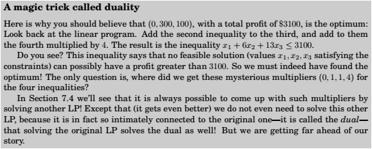
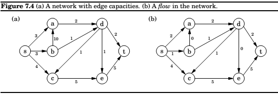
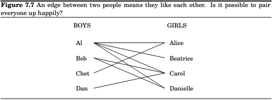
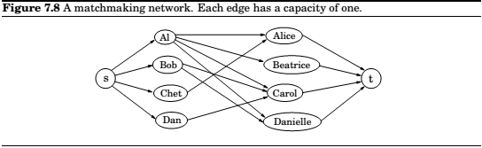
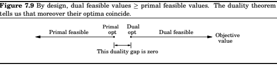
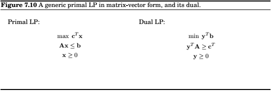
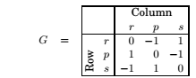
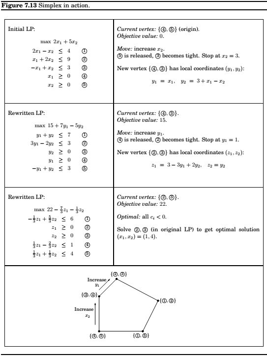
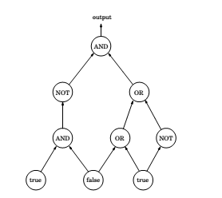
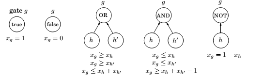

Chapter 7: Linear Programming and reductions
Linear programming describes a broad class of optimization tasks in which both the constraints and the optimization criterion are linear functions. It turns out an enormous number of problems can be expressed in this way.
An introduction to linear programming
Eample : Profit maximization
We represent the situation be a linear program as follows,
Objective function :
$$max; x_1 + 6x_2$$
Constraints :
$$x_1 \leq 200 \ x_2 \leq 300 \ x_1 + x_2 \leq 400 \ x_1, x_2 \geq 0$$
Solving linear problems,
Simplex Method : Move from vertex to vertex(generally starting at origin), optimizing the objective function. Stop when no neighbor gives better results.
Here is the updated linear program,
$$max; x_1 + 6x_2+13x_3 \ x_1 \leq 200 \ x_2 \leq 300 \ x_1 + x_2 + x_3 \leq 400 \ x_2 + 3x_3 \leq 600 \ x_1, x_2, x_3 \geq 0$$

Example : Production planning
An example with large number of variables and constraints.
Integer Linear Programming is hard
Example : Optimum bandwidth allocation
Variants of Linear Programmin
A general linear programming problem has many degrees of freedom,
- It can be either a maximization or a minimization problem.
- Its constraints can be equations and/or inequalities.
- The variables are often restricted to be non-negative, but the can also be unrestricted in sign.
All these variants can easily be reduced to one another vio simple transformations.
- To turn a maximization problem into a minimization(or vice-versa), just multiply the coefficients of the objective function by -1.
- To turn an inequality constraint like $\sum_{i=1}^na_ix_i \leq b$ into an equation, introduce a new variable $s$ and use
$$\sum_{i=1}^na_ix_i+s=b,\quad\quad s \geq 0$$
This is called a *slack variable* for the inequality. As justification, observe that a vector $(x_1…x_n)$ satisfies the original inequality constraint if and only if there is some $s \geq 0$ for which it satisfies the new equality constraint. - To change an equality constraint into inequalities is easy : rewrite $ax=b$ as the equivalent pair of constraints $ax \leq b$ and $ax \geq b$ .
- Finally, to deal with a variable $x$ that is unrestricted in sign, do the following,
- Introduce two non-negative variables, $x^+, x^- \geq 0$.
- Replace $x$, wherever it occurs in the constraints or the objective function, by $x^+-x^-$.
This way $x$ can take on any real value by appropriately adjusting the new variables. More precisely, any feasible solution to the original LP involving $x$ can be mapped to a feasible solution to the new LP involving $x^+, x^-$, and vice-versa.
Flows in Networks
Shipping Oil

Maximizing flow
- It doesn’t violate edge capacities, $0 < f_e < c_e$ for all $e \in E$.
- For all nodes $u$ except $s$ and $t$, the amount of flow entering $u$ equals the amount leaving $u$: $$\sum_{(w,u)\in E}f_{wu} = \sum_{(u,z)\in E}f_{uz}$$
In other words, flow is conserved.
A closer look at the algorithm, in each iteration, simplex looks for an $s-t$ path whose edges $(u,v)$ can be of two types,
- $(u,v)$ is in the original network, and is not yet at full capacity.
- The reverse edge $(u,v)$ is in the original network, and there is some flow along it.
Bipartite Matching


Duality
Turns out, every linear maximization problem has a dual minimization problem.


Duality theorem : If a linear program has a bounded optimum, then so does its dual, and the two optimum values coincide.
Zero Sum Games
Various conflict situations in life can be represented by matrix games.
For ex. rock-paper-scissors can be specified by the payoff matrix .

Now, if they play repeatedly, they have to employ a mixed strategy, which can be specified by the vector $\mathbf x = (x_1, x_2, x_3)$ for first player and $\mathbf y = (y_1, y_2, y_3)$ for the two players.
Therefore, for any given round, the expected payoff is
$$\sum_{i,j}G_{ij}\cdot Prob[\text{Row plays } i, \text{Column plays } j] = \sum_{i,j}G_{ij}x_i, y_j$$
Row wants to maximize this, while Column wants to minimize it.
If both Row and Column force a “completely random strategy” , both of them will get an expected payoff of zero. This is in fact a consequence of linear programming duality.
The simplex algorithm
Let v be any vertex of the feasible region.
while there is a neighbor v' of v with better objective value:
set v = v'
Any setting of the $x_i$’s can be represented by an $n$-tuple of real numbers and plotted in $n$-dimensional space. A linear equation involving the $x_i$’s defines a hyperplane in this same space $\mathbb R^n$ and the corresponding linear equality defines a half-space, all points that are either precisely on the hyperplane or lie on one particular side of it. Finally, the feasible region of the linear program is specified by a set of inequalities and is therefore the intersection of the corresponding half-spaces, a convex polyhedron.
Verices and neighbors in n-dimensional space
Each vertex is the unique point at which some subset of hyperplanes meet.
Alternatively,
Pick a subset of the inequalities If there is a unique point that satisfies them with equality, and this point happens to be feasible, then it is a vertex.
Two vertices are neighbors if they have $n-1$ defining inequalities in common.
The algorithm
On each iteration, simplex has two tasks:
- Check whether the current vertex is optimal(and is so, halt).
- Determine where to move next. 
Loose ends
The starting vertex, turns out finding a starting vertex can be reduced to an LP and solved by simplex.
Degeneracy, geometrically, this means that the vertex is at the intersection of more than $n$ faces of polyhedron(say $n+1$). Algebraically, it means that if we choose any one of the $n+1$ sets of $n$ inequalities and solve the corresponding system of $n$ linear equations in $n$ unknowns, we’ll get the same solution in all $n+1$ cases.
This is a serious problem: simplex may return a suboptimal degenerate vertex simply because all its neighbors are identical to it and thus offer no better objective. And if we modify simplex to detect degeneracy and continue to hop from vertex to vertex, despite the lack of any improvement in the cost, it may end up looping forever.
This can be solved by perturbation, jolt one of the planes a little so that the vertex splits up in two.
Unboundedness, in some cases the objective function can be made arbitrarily large. If this is the case, simple will discover it, in exploring the neighbor of a vertex, it will notice that taking out an inequality and adding another leads to an undetermined system of equations that has infinite number of solutions. And in fact the space of solutions contains a whole line along which the objective can become larger and larger, all the way to infinity. In this case the simplex halts and complains.
The running time of simplex
Consider a generic LP,
max $c^Tx$ such that $Ax \leq 0$ and $x \geq 0$,
where there are $n$ variables and $A$ contains $m$ inequality constraints.
A naive implementation can give an unappetizing time of $O(mn^4)$. How? Find out…!!!
Fortunately, there is a much better way, where this can be reduced to $O(mn)$ .
By employing the strategy of transforming to local view of a vertex.
Linear programming in polynomial time
Simplex is exponential,but performs well in practice.It is considered a paradox, can be solved in practice, but not in theory.
Ellipsoid Algorithm, Confine the solution into smaller and smaller ellipsoids. however, this could not compete well with simplex in practice.
The paradox deepened: A problem with two algorithms, one that is efficient in theory, and one that is efficient in practice.
Interior point method, dashes to the optimum corner, not be hopping from corner to corner, but by cutting a clever path in the interior of the polyhedron. And it does perform well in practice.
The fierce competition between the two approaches resulted in the development of very fast code for linear programming.
Postscript : circuit evaluation
We are given a Boolean circuit, that is , a dag of gates of the following types,
- Input gates have indegree zero, with value
trueorfalse. ANDgates andORgates have indegree 2.NOTgates have indegree 1.
For example,

This an be reduced to an LP by the following substitutions,

And, $0 \geq x_g \geq 1$, for all the gates.
We don,t need to maximize anything, we just need to find out $x_g$ corresponding to the output gate.
This is the most general problem that can be solved in polynomial time. Hence, the fact that CIRCUIT VALUE reduces to LP means that all problems that can be solved in polynomial time!